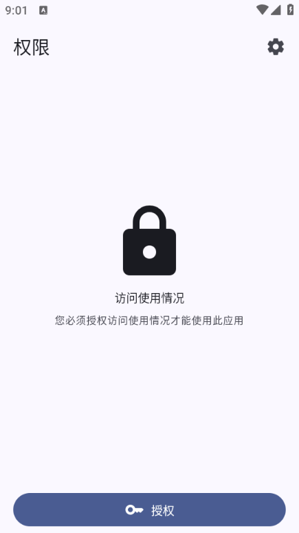
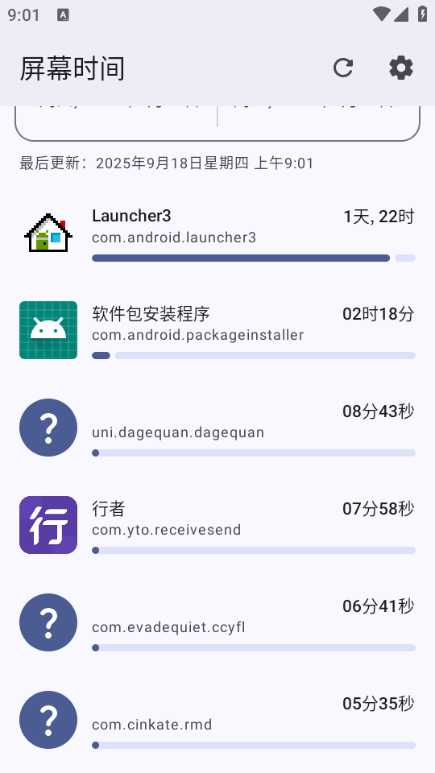

Screen Time 看着简单，其实有几个坑容易踩
Screen Time 是一款统计手机使用时长的开源应用，看起来就是个图表工具，但第一次装和日常用的时候几个细节没注意就会白忙活一场。
第一次装 Screen Time 是半年前的事了——它是一款统计手机使用时长的开源应用，官网上的介绍也很克制，当时以为就是个"打开、看图、走人"的工具。结果没两天就碰到统计数字对不上、应用被系统杀掉重启后数据断档这类破事，前后折腾了小一周才把几个坑都趟明白。写下来给后面装的人做个参照，别像我一样在同一个地方摔倒好几次。
坑一：装完打开是一片空白，不是 Bug 是授权没给全
症状：应用启动后主界面只显示一个提示页，反复说"请授予使用情况访问权"，点进去授权了也没用。
原因：这是我踩的第一个坑。Android 11 之后，"使用情况访问权"不在普通的权限管理里，藏在系统设置的一个专用入口里。我一开始在应用信息页翻来翻去找不到，还以为这个应用没做适配。而且就算你找到了那个入口，授权完成后还需要回到应用里点一下"我已授权"按钮——系统不会自动通知授权结果，这一点很反直觉。
解法：设置里搜"使用情况访问"，找到 Screen Time 那一栏打开开关。打开之后直接回应用，点确认按钮就行。别在授权页外面转圈圈了。还有一点要注意——有些国产 ROM 会额外弹一个二次确认框，上面写着"允许后可以查看您的应用使用情况"，这个也得勾上，否则开关会自己跳回去。

坑二：统计数字为什么和我体感对不上
症状：图表上显示今天用微信 2 小时，可我感觉明明刷了不到一小时，或者反过来，有些根本没碰过的应用也出现在排行榜里。
原因：这里涉及两个常见误区。第一，统计口径的问题——应用的"使用情况访问"权限能读到的是应用在前台的时间，但什么算"使用"是有边界的。比如有些应用你打开后立刻切到后台了，系统仍然会把这段时间算进去。第二，首次安装后的冷启动阶段，系统会从设备启动时间开始回溯，而不是从你安装那天起算，所以前几天的数据可能包含安装前的时长，看着就莫名其妙。
还有一种情况是系统应用的计入问题。有些 ROM 把拨号、短信这类系统级应用的前台时间也算进来了，有些不算。这不是 Screen Time 的 Bug，是不同 ROM 对系统应用的标记不同。
解法：先别急着删应用。应用设置的最底部有个"关于"组，里面点"计算方法"进去，能看到这款应用对统计口径的官方说明——Screen Time文档里也把这套口径完整展开了。数字对不上的时候，先核对这份说明再判断是不是异常。真的不想让某些应用干扰统计，进"管理忽略的应用"把它们屏蔽掉就行，微信、浏览器这种高频用的建议别动，屏蔽了就等于数据没了。

坑三：每次打开先看周视图还是日视图——这个选项真的影响心态
症状：每次打开应用，想瞄一眼"今天刷了多久"，结果先看到周平均数据，得手动切一次，久而久之就懒得打开了。
原因：设置里有个"默认显示的时间段"选项，藏在显示组里。这个选项默认是什么档位，我已经忘了，但刚装好那阵我确实没注意到它的存在。每次都要切换等于在给自己增加摩擦——行为习惯类工具最忌讳的就是"打开还得操作一下才能看到想看的"。
解法：进设置找到显示组，把默认值改成"日"（如果你每天都想瞄一眼）或者"周"（如果你只做每周复盘）。这个改动不大，但体验上差着事儿呢。我改完之后，睡前打开瞄一眼当天数据的动作从"偶尔做"变成了"每天都做"，差的就是那一下切换。
顺便说，同组里还有个"管理忽略的应用"入口，那个是管统计口径的，不是显示设置，别点错了。
坑四：换渠道下包，结果装不上——签名不一致
症状：从 A 渠道装了 1.2.0，想升级到 B 渠道的 1.2.1，系统提示"签名不一致，无法安装"，只能先卸载再装，数据全没。
原因：这是开源生态里的老问题。同一个开源应用，不同渠道（F-Droid、GitHub Release、第三方网盘）可能有两种情况：一种是同一个开发者签的，能直接覆盖；另一种是有人重新构建了但用了不同签名，包名一样但签名不同，系统不允许覆盖。我当时没查签名，直接卸载重装，白丢了两周的历史数据。
解法：开发者在源码仓库里公布了签名证书指纹，SHA-256 那一长串。装包之前找个能查 APK 签名的工具对一下，指纹一致就放心升。从官方下载拿的包大概率是对的，但从 F-Droid、GitHub Release、第三方网盘这些渠道转了几手的包需要多留个心眼，毕竟中间转手了不知道多少次。
卸载重装丢数据这件事，真的是踩一次痛一次。现在我养成习惯了，升级前先看一眼渠道和指纹，不对就不升，等 F-Droid 出包再更。
坑五：手机重启后统计会不会断
症状：重启完手机，发现当天的数据只记录了重启后的时段，重启前的那半截没了。
原因：应用申请了"开机启动"权限和"运行前台服务"权限，正常情况下重启后会自动恢复统计。但有些 ROM 的电池优化策略比较激进，会在开机后延迟甚至阻止非系统应用的自启动。我的 MIUI 就是这样，好几次重启后前台服务没拉起来，等我手动打开应用才发现数据已经断了好几个小时。
解法：把 Screen Time 加到电池优化白名单里，同时在自启动管理里强制开启。不同 ROM 的名字不一样——MIUI 叫"自启动"和"电池优化无限制"，OnePlus 叫"深度休眠白名单"，华为叫"受保护应用"。设置好之后重启一次验证一下，当天数据如果是完整的，就说明搞定了。
防坑清单
总结一下上面踩过的几个坑，浓缩成几条速查：
- 装完先开"使用情况访问权"，别在应用信息页瞎找，系统设置搜关键字
- 数字对不上先看应用内的"计算方法"说明，别直接删应用
- 默认显示时间段改成自己的习惯档位，减少每次打开的摩擦
- 升级前核对签名指纹，避免卸载重装丢数据
- 加进电池优化白名单和自启动管理，防止重启后统计断档
写在最后
知道这些坑之后，这软件其实相当省心。大部分问题都出在第一次装的那几天，后面用熟了基本没什么意外。对于想量化自己手机使用习惯的人来说，它是为数不多不联网、不收集数据、完全开源的选择——把几个小细节处理好，就能安安稳稳地用下去。
这套资料在GitHub、Gitee、GitCode 三个仓库都同步了一份，国内网络环境下访问哪个方便就用哪个，内容都是一样的。Screen Time 本身是开源项目，如果碰到了文档里没覆盖的新问题，去仓库提个 issue，开发者回复挺快的。